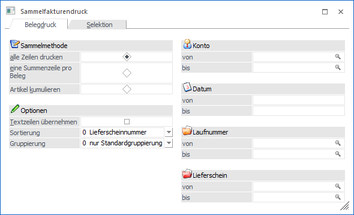
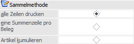
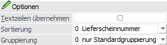
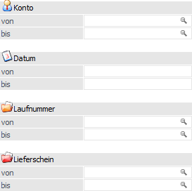

In dem Register "Belegdruck" können Selektionen und Einstellungen für den Druck der Sammelfakturen vorgenommen werden. Die getätigten Eingaben wirken sich direkt auf das Register "Selektion" aus.
Hinweis
Die Einstellungen in den Bereichen "Sammelmethode" und "Optionen" werden benutzerspezifisch gespeichert.

Sammelmethode

Ø Sammelmethode
In diesem Bereich kann definiert werden, wie die Ausgangsbelege auf der Sammelfaktura ausgewiesen bzw. zusammengefasst werden sollen. Folgende Varianten stehen zur Verfügung:
ü alle Zeilen drucken
Es werden
alle Zeilen der berücksichtigten Lieferscheine / Aufträge in der Sammelfaktura
ausgegeben.
ü eine Summenzeile pro Beleg
Es
wird pro Lieferschein / Auftrag in der Sammelfaktura nur eine Summenzeile mit
der gesamten Menge und dem gesamten Wert angeführt.
ü Artikel kumulieren
Es werden
alle redundanten Artikel in der Sammelfaktura zusammengefasst.
Hinweis 1
Beim Kumulieren der Artikel werden Werte immer aus der "ersten" Artikelzeile verwendet. D.h. sollten z.B. Artikel mit gleicher Artikelnummer, jedoch mit abweichenden Kostenstelle in unterschiedlichen Lieferscheinen, vorhanden sein, so wird der Wert aus dem ersten Lieferschein (der entsprechenden Artikelzeile) verwendet. Ebenso werden Werte aus dem Belegkopf beim Kumulieren immer aus dem ersten Lieferschein herangezogen.
Hinweis 2
Bei unterschiedlichem Colli werden Artikel trotz gleicher Artikelnummer nicht kumuliert.
Achtung
Sammelfakturen, welche auf Artikel kumuliert wurden, können nur vollständig und nicht bis zur Vorstufe storniert werden!
Hinweis
Wenn Aufträge, zu denen es keine Lieferscheine geben soll (Bearbeitungscode der Belegstufe "Lieferschein" mit Kennzeichen "N"), zu Sammelfakturen zusammengefasst werden sollen, dann ist dieses nur bei dem Sammelmethoden "alle Zeilen drucken" und "eine Summenzeile pro Beleg" möglich!
Optionen

An dieser Stelle kann (neben der Textübergabe) die Sortierung und Gruppierung für Sammelfakturen definiert werden. Hierbei ist zu beachten, dass die Lieferscheine / Aufträge zunächst immer anhand des Hauptkontos zusammengefasst werden. Innerhalb des Kontos werden dann einzelne Sammelfakturen pro Fremdwährung, Brutto-/Netto-Kennzeichen der Preisliste, Druckstatus des Lieferscheins (* und D getrennt von N) und Summenrabatt gebildet. Es handelt sich hierbei um die sogenannte "Standardgruppierung".
Ø Textzeilen übernehmen
Ist die Option "Textzeilen übernehmen" aktiviert, dann werden auch alle Artikeltextzeilen aus den Lieferscheinen / Aufträgen in die Sammelfaktura übergeben. Dieses ist nur möglich, wenn mit der Sammelmethode "alle Zeilen drucken" gearbeitet wird.
Ø Sortierung
Mit Hilfe der Auswahlliste "Sortierung" kann definiert werden, in welcher Reihenfolge die Lieferscheine / Aufträge für die Sammellieferscheinerzeugung sortiert werden sollen. Die Sortierung findet dabei immer nach der Standardgruppierung (siehe oben) statt. Folgende Möglichkeiten stehen zur Verfügung:
ü 0 - Lieferscheinnummer
ü 1 - Lieferscheindatum
ü 2 - Laufnummer
ü 3 - Auftragsnummer
ü 4 - Projektnummer
Ø Gruppierung
Innerhalb der Belegerfassung besteht die Möglichkeit ein Gruppierungskennzeichen pro Beleg zu hinterlegen (Register "Zusatz" - Feld "Gruppierung (SLS/SFA)"). Ob bzw. wie sich dieses Kennzeichen bei der Erstellung der Sammelfakturen auswirkt, kann mit Hilfe der Option "Gruppierung" definiert werden.
ü 0 - nur Standardgruppierung
verwenden
Es werden (innerhalb der Hauptkontonummer) die Belege nach der
Standardgruppierung (Fremdwährung, Brutto-/Netto-Kennzeichen der Preisliste,
Druckstatus des Lieferscheins und Summenrabatt) zusammengefasst. Innerhalb der
Standardgruppierung erfolgt die Sortierung gemäß der Option "Sortierung". Das
Gruppierungskennzeichen der Belege wird nicht berücksichtigt.
ü 1 - Kennzeichen vor
Standardgruppierung berücksichtigen
Es werden (innerhalb der
Hauptkontonummer) die Belege nach dem manuell zu vergebenen
Gruppierungskennzeichen gruppiert. Anschließend erfolgt die Zusammenfassung auf
Grundlage der Standardgruppierung (Fremdwährung, Brutto-/Netto-Kennzeichen der
Preisliste, Druckstatus des Lieferscheins und Summenrabatt). Innerhalb der
Standardgruppierung wird die Sortierung gemäß der Option "Sortierung"
vorgenommen.
ü 2 - Kennzeichen nach Sortierung
berücksichtigen
Es werden (innerhalb der Hauptkontonummer) die Belege nach
der Standardgruppierung (Fremdwährung, Brutto-/Netto-Kennzeichen der Preisliste,
Druckstatus des Lieferscheins und Summenrabatt) zusammengefasst. Innerhalb der
Standardgruppierung erfolgt die Sortierung gemäß der Option "Sortierung".
Abschließend wird auf Grundlage des Gruppierungskennzeichens der Belege eine
weitere Gruppierung durchgeführt.
Beispiel
Es sind 4 Lieferscheine für den Kunden "230A001" vorhanden und es wird die Sortierung "3 - Projektnummer" verwendet (alle Standardgruppierungselemente sind identisch):
ü Lieferschein "LS1" - Projektnummer "P100" - Gruppierungskennzeichen "K1"
ü Lieferschein "LS2" - Projektnummer "P101" - Gruppierungskennzeichen "K1"
ü Lieferschein "LS3" - Projektnummer "P100" - Gruppierungskennzeichen "K2"
ü Lieferschien "LS4" - Projektnummer "P101" - Gruppierungskennzeichen "K2"
Je nach Gruppierungsoption werden die folgenden Sammelfakturen erstellt:
ü Option "0 - nur
Standardgruppierung verwenden"
Es wird nur eine Sammelfaktura erstellt, da
das Gruppierungskennzeichen nicht berücksichtigt wird. Innerhalb der
Sammelfaktura wird nach der Projektnummer sortiert.
ü Option "1 - Kennzeichen vor
Standardgruppierung berücksichtigen"
Es werden zwei Sammelfakturen erstellt.
Die eine Faktura beinhaltet die Lieferscheine mit dem Gruppierungskennzeichen
"K1" und die zweite die Lieferscheine mit dem Kennzeichen "K2". Innerhalb beider
Belege wird wiederum nach der Projektnummer sortiert.
ü Option "2 - Kennzeichen nach
Sortierung berücksichtigen"
Es werden vier Sammelfakturen erstellt. Es wird
zunächst nach der Projektnummer sortiert und dann pro Gruppierungskennzeichen
eine Sammelfaktura erstellt, da die Reihenfolge der Kennzeichen "K1, "K2", "K1"
und "K2" lautet.
Selektion

Ø Konto von / bis
An dieser Stelle kann auf die Kunden- bzw. Lieferantennummer eingeschränkt werden.
Hinweis
Ob es sich bei der Nummer um jene des Rechnungsempfängers oder der Lieferadresse handelt, ist abhängig von der Einstellung "Hauptkonto für Belege" (WinLine START - Parameter - FAKT-Parameter - Belege - Allgemein - Option "Hauptkonto für Belege").
Ø Datum von / bis
Hier kann auf das Belegdatum der Lieferscheine / Aufträge eingeschränkt werden, welche in Sammelfakturen übernommen werden sollen.
Ø Laufnummer
Hier kann auf die Laufnummern der Lieferscheine / Aufträge selektiert werden, für welche Sammelfakturen erzeugt werden sollen.
Ø Lieferschein von / bis
An dieser Stelle kann eine Einschränkung auf die Lieferscheinnummern erfolgen.